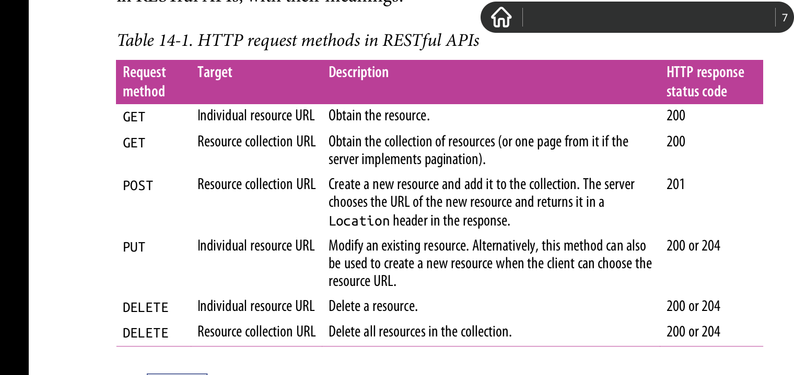
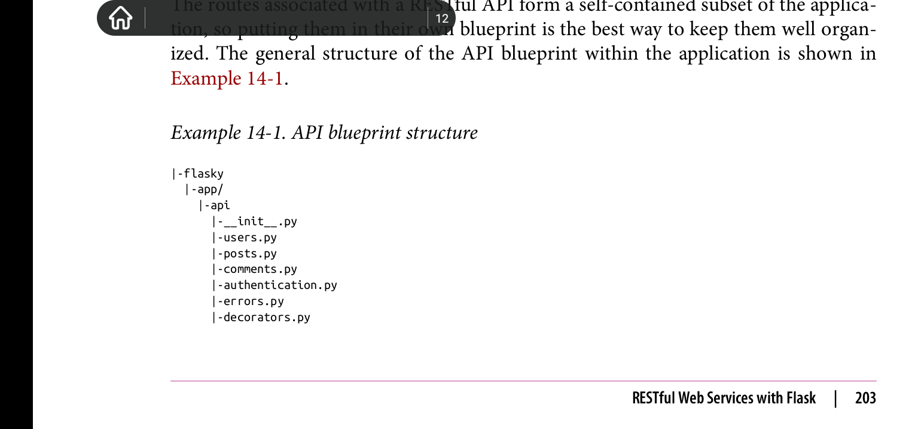
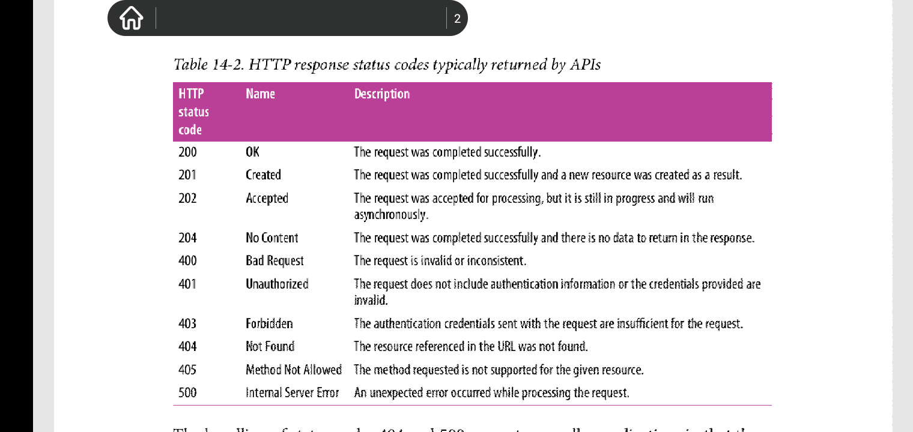
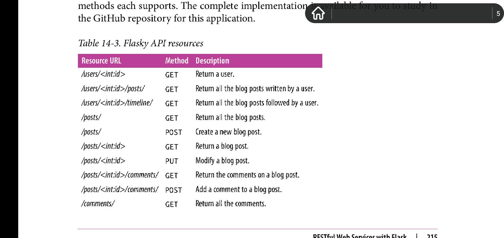

Chapter 14: Application Programming Interfaces
Overview
近年来，在网站开发中流行着一种趋势: 将越来越多的网站业务逻辑移到了客户端处理，如此产生的架构称为富接口应用(Rich Interface Application, RIAs)。在RIAs架构中，服务器主要的或者说唯一的功能是给客户端程序提供数据获取和存储服务。在这种模型下，服务器变成了网络服务器(web server)或者是应用程序编程接口(Application Programming Interfaces, API)。
有数种协议供RIAs(应该是实现该架构的客户端应用)与网络服务器通信。远程进程调用(Remote Procedure Call, RPC)协议，比如XML-RPC协议和它的衍生协议。而在几年前，简单对象访问(Simple Object Access)协议是最流行的选择。但是近些年，表示状态传递(Representational State Transfer, REST)架构渐渐的受网站开发所喜爱，因为该架构基于与World Wide Web类似的模型。
Flask是构建RESTful网络服务器的理想框架，这多亏flask轻量级的特点。本章， 你将学习怎样实现基于Flask的RESTful API。
Introduction to REST
Roy Fielding的PhD dissertation按照六个定义特点来描述用于网络服务器的REST架构。
-
Client-Server
客户端和服务器之间必须有明确的界限。 -
Stateless
客户端请求必须携带所有执行该请求所必须的数据。而且服务器禁止存储任何涉及客户端状态的数据，比如前后请求共享的数据。 -
Cache
由服务器发送的响应可以被标记为可缓存(cacheable)或者不可缓存(noncacheable),这样客户端(或者介于客户端和服务器之间的中间层)可以利用该缓存响应来达到优化的目的。 -
Uniform interface(统一接口)
客户端访问服务器资源所使用的协议必须就有一致性，定义良好以及符合标准化。这也是REST最复杂的方面，其涉及独立资源标识符的使用(use of unique resources identifiers)，资源表示(resources representation),以及在客户端和服务器之间的自我描述信息(self-descriptive message)，和超媒体(hypemedia). -
Layered system(分层系统)
为了提高性能，可靠性，适应性(scalability),可以在客户端和服务器之间插入代理服务器(Proxy servers), 缓存(cache)和网关(gateways)。 -
Code-on-demand(按需执行代码)
客户端可以按需从服务器下载代码，用以在客户端的环境下执行。
Resources Are Everything
对REST架构来说资源是核心概念。在该语境下，资源就是在网站领域下其感兴趣的项目(item)。比如，在博客网站例子中，users, blog posts, 以及comments就是资源。
每一个资源都必须有一个独立的标识符来描述它。当使用HTTP协议时，资源标识符就是统一资源标识符(URLs)。继续博客的例子，一个博客可以用URL /api/posts/12345来表示，这里的12345可以是该博客在数据库中的主键。URLs的格式或者内容并不重要，重要的是，每一个资源标识符可以唯一的标识一个资源。
一个类中所有资源集合也可以用一个URL来标识。标识所有博客的URL可以是/api/posts/，而标识所有评论的URL可以是/api/comments/
API也可以定义用于表示某个类实例中的资源子集的URL。比如，在博客12345中代表资源子集的所有评论可以由URL /api/posts/12345/comments/来表示。将表示资源子集的URL定义成以斜杠(/)结尾，是常用的方式，因为这样该url看起来像目录，也就符合资源子集的概念。
注意flask对以斜杠结尾的urls的对待是不同的。如果客户端请求一个没有后置斜杠的网址，而正好app定义了一个有后置斜杠的匹配网址，那么app会返回一个指向该后置网址的重定向该客户端。但是，反过来的话，这种重定向不会发生，也就是说404，页面不存在。
Request Methods
客户端程序通过向服务器发送指定资源标识符和指定请求方法来向服务器表明希望执行特定的操作。为了获取所有博客，客户端可以使用博客API中定义的方法，以GET方法发送资源网址http://www.example.com/api/posts/，而插入新博客，可以以POST方法，将在查请求体(request body)中定义的博客内容，连带上面的统一网址发送给服务器来实现。客户端通过发送http://www.example.com/api/posts/12345 网址给服务器来获取id为12345的博客。以下列出了在RESTful API中常用的请求方法和意思

注意，REST架构并不强制要求一个资源实现所有的请求方法。因为当客户端请求某个资源并没有定义的请求方法时，405请求状态码(Method not Allowed)会返回，该错误处理过程由flask自动执行。
上述介绍的GET, POST, PUT和DELETE请求方法只是一部分, HTTP协议还会依赖其他请求方法，比如HEAD方法和OPTIONS方法，这两个方法由flask自动实现。
Request and Response Bodies
客户端发送给服务器的资源存储在请求体中，而服务器响应给客户端的资源则是存储在响应体中，但是REST并不限制用于加密资源的手段。请求体或者响应体中的Content-Type header用于指定资源加密的方式。可以在客户端和服务器之间使用HTTP协议中的标准内容分发机制来统一客户端和服务器之间双向的资源加密方式。
在RESTful网络服务器中普遍使用的加密格式是，JavaScript Object Notation(JSON)和Extensible Markup Language(XML)。对于基于网站的富接口应用(Rich Interfaces Application, RIAs)，通常使用JSON，因为其相比XML更简洁，而且和浏览器上唯一的客户端脚本语言JavaScript紧密相关。回到博客例子，一个博客可以使用如下JSON代码来表示。
{
"self_url": "http://www.example.com/api/posts/12345",
"title": "Writing RESTful APIs in Python.",
"author_url": "http://www.example.com/api/users/2",
"body": "...text of the article here ..",
"comments_url": "http://www.example.com/api/posts/12345/comments"
}
注意这里self_url, author_url, comments_url使用的都是完全限定资源标识符。这很重要，因为这些URLs允许客户端发现新资源。
另外，在设计良好的RESTful API里，客户端已知一些父级资源标识符urls,其可以通过响应中保存的额外下级urls来拼凑出剩下资源的urls。
Versioning(版本控制)
在传统的以服务器为中心的网络app里，服务器对app拥有完全的控制。对于这种app的更新，简单地将新版app安装到服务器上就行了，因为运行在浏览器上的app各个部分都会从服务器上下载更新代码。
而对于基于RIAs架构的客户端app和RESTful网络服务器更新，其更加的复杂，因为经常客户端app的开发是独立于服务器app的---甚至由不同的人员所开发。考虑如下例子，一个基于RESTful网络服务器的app被大量不同的客户端所使用，客户端包括浏览器和智能手机上的各种联网应用。浏览器可以通过服务器在任何时间更新，但是智能手机上的各种联网应用不能被强制更新。智能手机所有者必须授权该更新。即使智能手机拥有者希望更新，但是开发者做出的更新也不可能兼顾各种机型，各种系统版本的智能手机，以使其能和最新版服务器app完美协作。
基于上述原因，网络服务器app需要比网络客户端app更宽容，这样网络服务器app也能够和老版本的客户端app交互。更新网络服务器app需要倍加小心，因为任何向后不兼容的更新会打破客户端app与其的协作。通用的解决方案是，给网络服务器app一个版本号，该版本号被添加到该版本的服务器app所定义的所有URLs中。比如，首发的博客服务器app可以以/api/v1/posts/来获取所有的博客。
在URLs中包含服务器app版本号使得app的老旧功能和新功能组织明确，互不干扰，这样，可以给最新的客户端提供最新的功能，同时可以继续支持老旧的客户端app。而对于博客服务器app来说，可以改变博客的JSON表示，同时以/api/v2/posts/来获取改变后的博客，同时，旧版本客户端依旧可以使用/api/v1/posts/来获取未更改JSON格式的所有博客。
经管支持多个版本服务器app会造成维护负担，但是在某些情况下，这是唯一的方法来更新app而不对现有的部署造成问题。一旦所有的客户端都迁移到新版本，旧版本服务器app就可以废弃，之后从服务器上完全的删除。
RESTful Web Services with Flask
Overview
使用flask可以很容易创建出RESTful网络服务器。使用route()结合methods参数可以暴露服务器定义的资源urls.而且使用JSON数据也简单，以字典形式调用request.get_json()就可以获取保存在请求中的json数据。而且使用flask的jsonify()函数传入字典数据，就可以很轻易地构造包含JSON数据的响应。
以下小结将展示flask如何扩展以支持RESTful网络服务，以使客户端可以访问博客和相关资源。
Creating an API Blueprint
与RESTful API相关的路由组成了一个自包含的框架app，因此将这些路由放置在一个单独的蓝图里有利于保持良好结构。以下是通用API蓝图的结构:

注意用于api的包是如何将版本号包含进包名中的。如果将来会引入向后不兼容的新版本api,那么可以将该版本api代码放置在指定api版本的子包中，该子包放置在api文件夹下，并且两个版本的api蓝图都可以在app中注册。
api蓝图在各个模块里实现app中的每一个resource。也包含了用于处理验证，错误处理以及自定义装饰器的模块。以下是该蓝图构造代码:
# app/api/__init__.py: API blueprint creation
from flask import Blueprint
api = Blueprint('api', __name__)
from . import authentication, posts, users, comments, errors
该蓝图包构造器的结构类似于其他的蓝图。导入所有蓝图的组件是必须的，这样路由和处理器才会注册。因为其他模块都依赖api蓝图实例，因此在最后导入这些模块，以避免循环依赖。
以下是蓝图注册的代码:
# app/__init__.py: API blueprint registration def create_app(config_name): #... from .api import api as api_blueprint app.register_blueprint(api_blueprint, url_prefix='/api/v1') #....
该api蓝图以一个url前缀/api/v1来注册，使用前缀是很好的经验，因为这避免了对api 版本号硬性编码。
Error Handling
RESTful 网络服务器发送包含在响应中的合适http状态码加上任何在响应体中的额外信息，来通知客户端当前请求的执行状态。通常客户端希望网络服务器发送以下状态码:

在api里，处理404和500状态码有点复杂，而这些错误通常由flask自己处理，之后给客户端返回html响应。这种方式会令api客户端感到困惑，因为它期望所有的响应都是JSON格式的。
一种为所有客户端(包括api客户端和普通客户端)产生合适的响应方式是，基于客户端所要求的格式，来调整错误处理器的执行方式，这种技术被称作content negotiation(内容协商)。以下是更新后的404错误处理器，其将会给api客户端发送JSON响应，而给普通客户端发送HTML响应。500错误处理器的实现类似。
# app/api/errors.py: 404 error handler with HTTP content negotiation
@main.app_errorhandler(404)
def page_not_found(e):
if request.accept_mimetypes.accept_json and \
not request.accept_mimetypes.accept_html:
response = jsonify({'error': 'not found'})
response.status_code = 404
return response
return render_template('404.html'), 404
该新版本错误处理器检查Accept请求头，该请求头被编码到了request.accept_mimetypes中，以此来决定客户端想要以什么格式返回响应。浏览器通常不对响应格式做出限制，但是api客户端一般需要做出限制。JSON响应只会发送给那些接受格式列表中只包含JSON的客户端，而不包含HTML。
而其他状态码由网络服务器明确产生，因此可以在api蓝图的errors.py模块里实现相关帮助函数。以下是403错误的实现代码，其他的类似:
# app/api/errors.py: API error handler for status code 403
def forbidden(messages):
response = jsonify({'error': 'forbidden', 'messages': message})
response.status_code = 403
return response
API蓝图里的视图函数可以在需要时调用这些辅助函数来产生错误响应。
User Authentication with Flask-HTTPAuth
网络服务器和网络app一样，需要保护信息免受未验证用户访问。因此，RIAs必须询问用户登陆令牌，并将该信息传递给服务器验证。
早前提示过，RESTful网络服务器的特点之一是无状态(stateless)，这意味着服务器不允许在和客户端使用请求往来时记住任何涉及客户端的信息。客户端需要在请求体中提供用于执行请求的任何必要信息，因此，每一个请求都需要包含一个用户令牌。
当前使用Flask_login库实现的登陆功能将数据存储在用户会话中，而flask默认是将用户会话信息存储在客户端cookie里，因此服务器没有存储任何用户相关的信息。而是由客户端存储它。看上去这种方式挺符合REST要求的无状态，实际上，在RESTful网络服务器中使用cookie，这种方式有缺陷，因为对于那些不属于网络浏览器的客户端来说，以这种方式实现该登陆功能是很笨重的。因此，在APIs里使用cookie常被视为糟糕的设计选择。
REST要求的无状态肯看上去多度严格，但是这并非毫无根据。无状态服务器可以很容易的在 app 规模上很容易的迭代。如果一个服务器存储了涉及客户端得数据，那么必须确保同一个服务器所接受的请求来自于指定的客户端，或者使用共享空间来存储客户端数据用以区分客户端。然而在无状态服务器前提下，这两种方式都是难以处理的复杂问题。
因为RESTful架构基于HTTP协议，因此，使用http验证的基础形式或扩展版是发送验证信息的不二之选。使用http验证，所有的请求都会在Authorization 请求头中包含用户验证信息。
http验证协议足够简单，可以直接实现，但是Flask-HTTPAuth扩展提供了一个方便的封装，其使用与flask-login的login_required装饰器一样的方式隐藏了协议细节。
安装flask-httpauth:
(venv) $ pip install flask-httpauth
为了初始化扩展的http基础验证，必须创建HTTPBasicAuth类的实例。和flask-login类似，flask-httpauth对用户验证的流程不施加要求，而用户身份信息由回调函数提供。以下是扩展的初始化和提供验证回调的代码:
# app/api/authentication.py: Flask-HTTPAuth initialization from flask_httpauth import HTTPBasicAuth auth = HTTPBaseAuth() @auth.verify_password def verify_password(email, password): if email = '': return False user = User.query.filter_by(email=email).first() if not user: return False g.current_user = user return user.verify_password(password)
因为该类型用户验证只用在该api蓝图里，所以，flask-httpauth扩展是在蓝图包中初始化的，而不是像其他扩展那样在app包中被初始化。
email和password使用User模型中的支持来验证。当验证回调函数返回True时，意味着验证有效，反之亦然。flask-httpauth扩展也会对那些email和password都为空的请求执行回调函数。这种情况下，如果email为空，函数会立即返回False，用以阻止request。在某些app中，函数返回True来表示匿名用户无需注册就可以
因为用户证书将和每一个请求进行交换，因此将api路由暴露在加密的http链接之上是相当重要的，这样处于发送状态下的请求和响应都会被加密。
当验证证书无效时，服务器返回一个401错误状态码响应给客户端。而Flask-HTTPAuth默认产生带有401状态码的响应。但是为了响应和那些由api返回的error相一致，error response 必须被定制，以下是代码:
# app/api/authentication.py: Flask-HTTPAuth error handler
from .errors import unauthorized
@auth.error_handler
def auth_error():
return unauthorized('Invalid credentials')
可以使用auth.login_required装饰器来保护路由:
@api.route('/posts/')
@auth.login_required
def get_posts():
pass
但是因为该蓝图下所有的路由都需要以同样的方式被保护，可以在before_request处理器中包含login_required装饰器来实现一次性为所有路由保护。
# app/api/authentication.py: before_request handler with authentication
from .errors import forbidden
@api.before_request
@auth.login_required #验证 api客户用户名和密码
def before_request(): #之后再验证该用户的confirmed状态
if not g.current_user.is_anonymous and \
not g.current_user.confirmed:
return forbidden('Unconfirmed account')
注意该蓝图里的所有路由都会被自动验证检测。此外，before_request也拒绝了账户没有被confirmed验证用户。
Token-Based Authentication
客户端发送的每一个请求中必须包含验证证书(authentication credentials)。为了避免在每一个请求中包含密码等敏感信息，可以使用基于令牌的验证解决方案。
在基于令牌的解决方案中，客户端向服务器发送包含了用于验证的登陆证书后(账号和密码)，服务器会返回给客户端一个访问令牌，而改令牌可用于替代登陆凭证来完成后续的请求验证。w为了安全起见，令牌有存活期限。一旦令牌过期，客户端必须重新请求一个新令牌。令牌泄露的风险由其短暂的生命周期而被限制。以下代码在User模型中创建了两个新方法用于生成和验证验证令牌，其使用itsdangerous库。
# app/models.py: token-based authentication support
class User(db.Model):
#...
def generate_auth_token(self, expiration):
s = Serialization(current_app.config['SECRET_KEY'], expires_in=expiration)
return s.dumps({'id': self.id}).decode('utf-8')
@staticmethod
def verify_auth_token(token):
s = Serialization(current_app.config['SECRET_KEY'])
try:
data = s.loads(token)
except:
return None
return User.query.get(data['id'])
generate_auth_token()方法返回一个加密了用户id的签名令牌。以秒作为单位的过期时间被使用。verify_auth_token()验证令牌有效后，会返回数据库中指定的用户对象。
为了验证带有令牌的请求，必须修改Flask_HTTPAuth的verify_password回调函数，使其接受令牌和普通的证书。以下是更新后的代码:
# app/api/authentication.py: improved authentication verification with token support @auth.verify_password def verify_password(email_or_token, password): if email_or_token == '': return False if password == ''" g.current_user = User.verify_auth_token(email_or_token) g.token_used = True return g.current_user is not None user = User.query.filter_by(email=email_or_token).first() if not user: return False g.current_user = user g.token_used = False return user.verify_password(password)
在该版本函数中，第一个参数可以是email address或者token。如果该字段为空，那么会被视为匿名用户。如果密码字段为空，那么email_or_token会被视为token，其会像往常一样被处理。如果两个字段都不为空，那么会使用普通的账号密码验证机制。该实现说明基于令牌的验证只是可选方案，而这由客户端决定是否使用该机制。为了使得视图函数可以区分两个方案，g.token_used变量被使用。
以下是向api中添加向客户端发送令牌的路由函数。
# app/api/authentication.py: authentication token generation
#api.route('/tokens/', methods=['POST'])
def get_token():
if g.current_user.is_anonymous or g.token_used: #该路由用于产生token, 已经带有token的请求当然得被废弃。
return unauthorized('Invalid credentials')
return jsonify({'token': g.current_user.generate_auth_token(
expiration=3600), 'expiration': 3600
})
因为上述路由也是由api蓝图定义，因此api实现的before_request处理器也对他有效。为了避免之前已经获取了token的客户端再次验证，这里检查了g.token_used变量，一旦他为真，那么该已经带有token的请求会被废弃。该函数的目的在于，阻止用户绕过令牌过期机制，用户可以通过使用过期的令牌作为验证来请求新的令牌。该函数返回的json响应包含为期一个小时的过期时间，而过期键值对也需要包含在json响应中。
Serializing Resources to and from JSON
一中通用需求是将服务器中的内部资源表示转换成JSON格式，或反向转换，这种格式是http请求和响应中通用的传输格式。将资源的内部表示转换成传输格式例如json的过程叫做序列化(serialization)。以下是添加到Post模型的新方法to_json():
# app/models.py: converting a post to a JSON serializable dictionary
class Post(db.Model):
#...
def to_json(self):
json_post = {
'url': url_for('api.get_post', id=self.id),
'body': self.body,
'body_html': self.body_html,
'timestamp': self.timestamp,
'author_url': url_for('api.get_user', id=self.author_id),
'comment_url': url_for('api.get_post_comments', id=self.id),
'comment_count': self.comments.count()
}
return json_post
}
其中url, author_url和comments_url字段需要各自返回对应的资源的url,因此这些由url_for()方法调用随后定义的路由函数来产生。
上述例子展示了怎样在json数据表示中预制资源的各种属性。comment_count字段返回数据库现有博客的数量。尽管该字段并非实际Post模型中定义的属性，但是这个客户端提供方便。
User模型中的to_json()方法实现类似，以下是方法实现:
# app/models.py: converting a user to a JSON serializable dictionary
class User(UserMixin, db.Model):
#...
def to_json(self):
json_user = {
'url': url_for('api.get_user', id=self.id),
'username': self.username,
'member_since': self.member_since,
'last_seen': self.last_seen,
'posts_url': url_for('api.get_user_posts', id=self.id),
'followed_posts_url': url_for('api.get_user_followed_posts', id=self.id),
'post_count': self.posts.count()
}
return json_user
注意，上述的json_post中的一些敏感字段例如email和role都被省略了。这又再一次阐述了提供给客户端的资源表示不必和数据库中相应的模型相同。
序列化的反转叫做反序列化(deserialization)。将来自于客户端对的JSON结构的数据反序列化回数据库模型并不容易，因为来源于客户端的一些数据可能是无效的，错误的，甚至是不必要的。以下是从JSON中构造Post的方法:
# app/models.py: creating a blog post from JSON
from app.exceptions import ValidationError
class Post(db.Model):
#...
@staticmethod
def from_json(json_post):
body = json_post.get('body')
if body is None or body == '':
raise ValidationError('post does not have a body')
return Post(body=body)
就如你所看到的，上述实现选择只从json字典中选取body属性。而body_html属性被忽略，因为服务端的由SQLalchemy定义的事件驱动在body属性被修改时，会自动被触发，其会执行html markdown渲染。而timestamp时间戳没必要修改。没使用author_url是因为客户端无权选择博客的作者，唯一的值是发布该博客的已验证用户。而comments_url和comment_count属性由数据库的关系自动生成。因此，不需要提供多少有用的信息就可以构造博客了。而url字段被忽略，是因为资源url是由服务器定义的，而不是客户端。
注意错误检测的实现方式。如果body字段缺失或值为空，那么会抛出一个ValidationError。在这里抛出异常是最合适的方式来处理错误，因为这个方法不应该知道如何正确地处理错误条件。异常迅速将错误返回给调用者，由高层代码来接手错误处理。其中ValidationError继承自ValueError:
# app/exceptions.py: ValidationError exception class ValidationError(ValueError): pass
现在应用需要以提供给客户端合适的响应的方式来处理这个异常。为了避免在视图函数中添加exception-catching代码，可以使用flask的errorhandler装饰器来安装全局异常处理器。以下是针对于ValidationError的处理器定义:
# app/api/errors.py: API error handler for ValidationError exception @api.errorhandler(ValidationError) def validation_error(e): return bad_request(e.args[0])
这里用到的errorhandler装饰器和用于http状态码的处理器是同一个，但是它接受一个Exception作为参数。一旦指定异常类抛出，该装饰函数会被自动触发。注意这里的errorhandler是在api蓝图里定义的，它只会对该蓝图里的路由负责。使用上述技术，视图函数中的代码无需包含错误检测代码，这使代码干净整洁。
Implementing Resource Endpoints
现在只需实现处理不同资源的路由就行了。其中， GET请求是最简单的，因为它只需要返回信息而不需要做出任何改变。以下是处理博客的两个GET处理器实现:
# app/api/posts.py: GET resource handlers for posts
@api.route('/posts/')
def get_posts():
posts = Post.query.all()
return jsonify({'posts': [post.to_json() for post in posts] })
@api.route('/posts/<int:id>')
def get_post(id):
post = Post.query.get_or_404(id)
return jsonify(post.to_json())
第一个路由处理请求多个博客集。该函数使用列表推导式来产生所有博客的json版本。第二个路由返回单个博客，如果请求id无效，则返回404错误代码。
以下是处理使用POST请求来要求向数据库中插入新博客的路由实现:
# app/api/post.py: POST resource handler for posts
@api.route('/posts/', methods=['POST'])
@permission.required(Permission.WRITE)
def new_post():
post = Post.from_json(request.json)
post.author = g.current_user
db.session.add(post)
db.session.commit()
return jsonify(post.to_json()), 201, \
{"Location": url_for('api.get_post', id=post.id)}
上述路由使用permission_required装饰器来确保当前已登陆用户拥有编写新博客的权限。而新博客的创建简单直接，因为之前实现的错误处理器接管了创建新博客过程中有可能出现的错误和异常。新博客使用json数据来创建，并且他的作者为当前已登陆用户。当新博客写入数据库后，一个201响应码和带有Location响应头的新插入的博客的地址被返回给客户端。
注意，为了方便客户端，在返回给客户端的响应体中包含了之前新插入的博客的body信息。这节省了客户端插入完新博客后还得使用GET请求方法来获取之前刚插入的博客body所花费的时间。用于阻止未登陆用户编写博客的premission_required装饰器和之前在app里用到的类似，只不过它特别为api蓝图进行了定制。以下为实现代码:
# app/api/decorators.py: permission_required decorator
def permission_required(permission):
def decorator(f):
@wraps(f)
def decorated_function(*args, **kwargs):
if not g.current_user.can(permission):
return forbidden('Insufficient permission')
return f(*args, **kwargs)
return decorated_function
return decorator
以下是使用PUT请求方法来修改已有博客的路由实现:
# app/api/posts.py: PUT resourc handler for posts
@api.route('/posts/<int:id>', methods=['put'])
@permission_requried(Permission.WRITE)
def edit_post(id):
post = Post.query.get_or_404(id)
if g.current_user != post.author and \
not g.current_user.can(Permission.ADMIN):
return forbidden('Insufficient permission')
post.body = request.json.get('body', post.body)
db.session.add(post)
db.session.commit()
return jsonify(post.to_json())
上述的权限检查更加复杂。不仅要确保当前已登陆用户具有编写博客的权限，而且还有检测当前用户是博客的作者或者是一个无所不能的管理员。该检测直接被添加到视图函数中。如果有许多视图函数需要使用到这种检测，那么编写一个装饰器可以避免代码累赘。
因为app并不支持删除博客，因此没必要实现DELETE请求方法。
而对于处理users和comments的资源处理器的实现也是类似的。以下列出了app支持的资源实现和各自支持的HTTP请求方法。可以在github中找到完整的app个资源处理器实现。

Pagination of Large Resource Collections
对于返回资源集合的GET请求，其代价是昂贵且难以管理的。像网络app一样，网络服务器也可以选择对资源集合进行分页。以下是对获取所有博客进行分页的一种实现方式:
# app/api/posts.py: Post pagination
@api.route('/posts/')
def get_posts():
page = request.args.get('page', 1, type=int)
pagination = Post.query.paginate(
page, per_page=current_app.config['FLASKY_POSTS_PER_PAGE'],
error_out=False)
posts = pagination.items
prev = None
if pagination.has_prev:
prev = url_for('api.get_posts', page=page-1)
next = None
if pagination.has_next:
next = url_for('api.get_posts', page=page+1)
return jsonify({
'posts': [post.to_json() for post in posts],
'pre_url': prev,
'next_url': next,
'count': pagination.total
})
json响应中的posts字段包含了数据项目，这一如往常，但是此时它只包含一页数据而不是整个数据集合。prev_url和next_url字段包含了前一页数据的url和后一页数据的url，如果到达左右边界，则其值为None。而total字段则是数据集中的数量统计。
上述技术也可以被应用到所有用于获取数据库集合的路由中。
Testing Web Server with HTTPie
我们可以使用HTTP客户端来测试网络服务器。最常用的测试python网络服务器的命令行客户端是: cURL 和 HTTPie。两者都很有用，但是HTTPie更加适用于API请求，具有更好的一致性和可读性的命令行语义。
假设开发版服务器运行在默认的http://127.0.0.1:5000网址上，那么可以使用如下命令行来执行GET请求:
(venv) $ http --json --auth <email>:<password> GET \
> http://127.0.0.1:5000/v1/posts
HTTP/1.0 200 OK
Content-Length: 7018
Date:....
Server: ...
{
"post": [...],
"prev_url": ...
....
...
}
注意响应中包含的分页链接。因为这里获取的是第一页，所以prev是null,而next和total是定义了的。
以下是使用POST请求来添加新博客的代码:
(env) $ http --auth <email>:<password> --json POST \ > http://127.0.0.1:5000/api/v1/posts/\ > "body=I'm adding a post from the command line." HTTP/1.0 201 CREATED Content-Length: .. .... ...
使用验证令牌来代替账号密码，可以使用如下命令来获取token:
(venv) $ http --json --auth <email>:<password> POST \
http://127.0.0.1:5000/api/v1/tokens/
HTTP/1.0 200 OK
Content-Length: 162
Content-Type: ..
...
{
"expiration": 3600,
"token": "...."
}
在随后的一小时以内，可以使用该token来取代 账户和密码。注意密码项置空。
http --json --auth sdscgfgfgfsd....: GET http://127.0.0.1:5000/api/v1/posts/
当令牌过期后，再次请求会返回 401错误码，代表令牌需要重新获取。
恭喜，part 2结束了，也意味着flask的开发结束了。下一步是部署，这是part 3的目标。